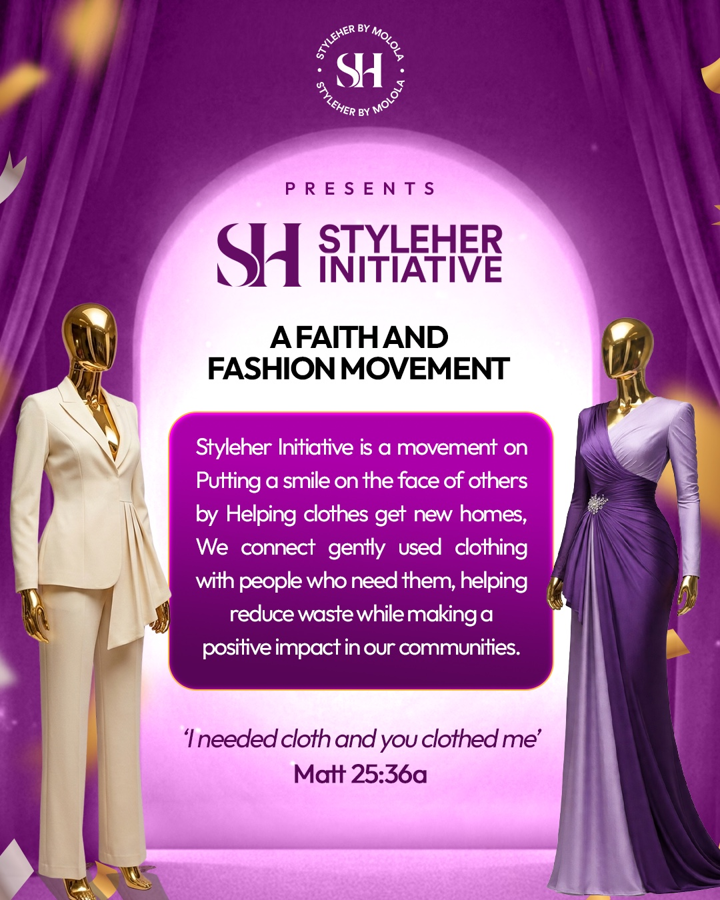
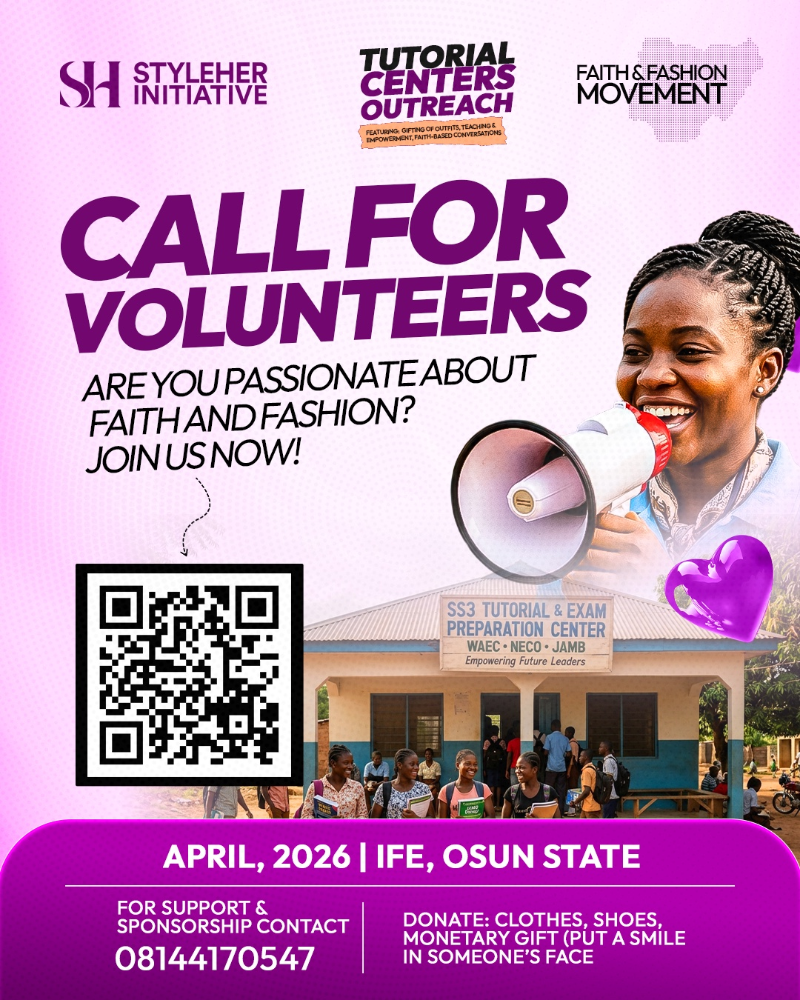

01 / REDISTRIBUTE
Clothing with purpose
We collect new and quality pre-loved clothing and help it reach people who can use and appreciate it.
We connect clothing with people who need it, promote responsible fashion choices, and empower communities through education, practical skills and meaningful outreach.

StyleHer Initiative is a community-focused initiative that helps quality pre-loved and new clothing find new homes. We believe what we wear can support confidence, self-expression and dignity—and that keeping useful clothing in circulation can reduce waste.
Through clothing redistribution, practical fashion education, outreach activities and conversations that inspire personal growth, we bring people together to make a difference.
Rooted in compassion. Driven by impact.
Our work brings together practical support, sustainable choices and opportunities to learn.
We collect new and quality pre-loved clothing and help it reach people who can use and appreciate it.
We share practical lessons in styling, clothing care, personal presentation and simple clothing repairs.
We create spaces for connection, encouragement, confident self-expression and personal growth.
Our outreach activities bring volunteers and community members together for clothing distribution, learning and shared experiences. In July 2026, our outreach at Eleweeran Community included conversations about dressing well, practical skills and the redistribution of clothes.
As we grow, we look forward to sharing more stories and verified impact figures from our work.
Explore Our OutreachesExplore the communities we've visited, the activities we shared, and the people who made each gathering possible. This collection will grow as we continue our work.

Our tutorial centres outreach campaign brought together clothing support, teaching, empowerment and community-focused conversations.
Read the Outreach StoryClothing distribution, conversations about dressing well, practical skills and meaningful connections with the community.
Read the Outreach Story
Outreach photography and campaign materials supplied by StyleHer Initiative.
Whether you donate clothes, share your time, or support an outreach, there's a place for you in this work.
These are example email links and must be replaced with confirmed contact details or live forms before publishing.
Interested in supporting a future outreach or collaborating with us? Get in touch to discuss opportunities.
Phone: 0814 417 0547
Phone number sourced from the provided outreach materials; please confirm it is still current.
We welcome people who want to give useful clothing a new home or volunteer their time and skills.
Our online registration forms will be linked here once they're ready.